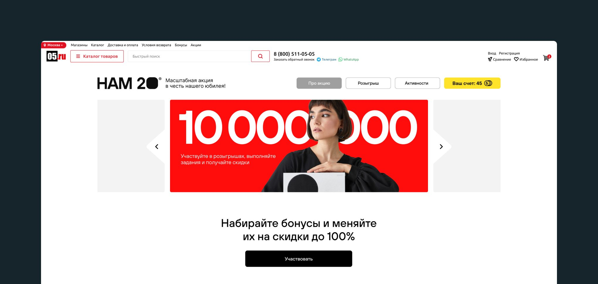
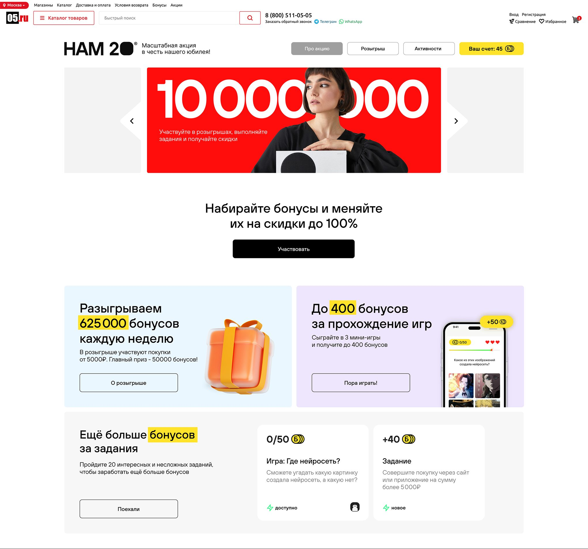
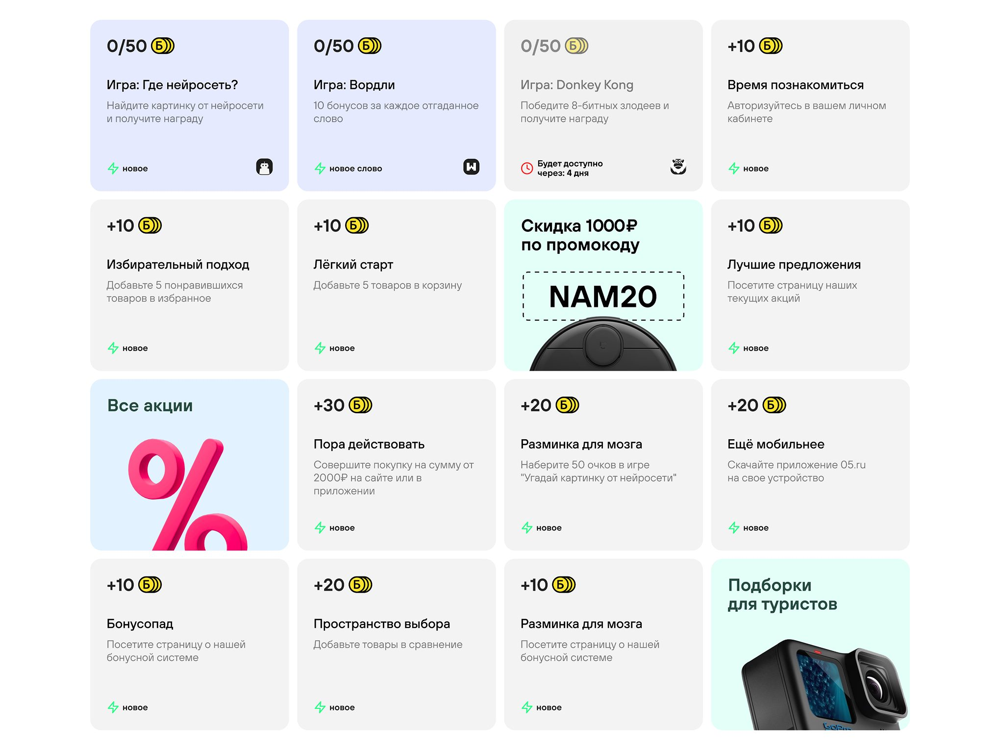
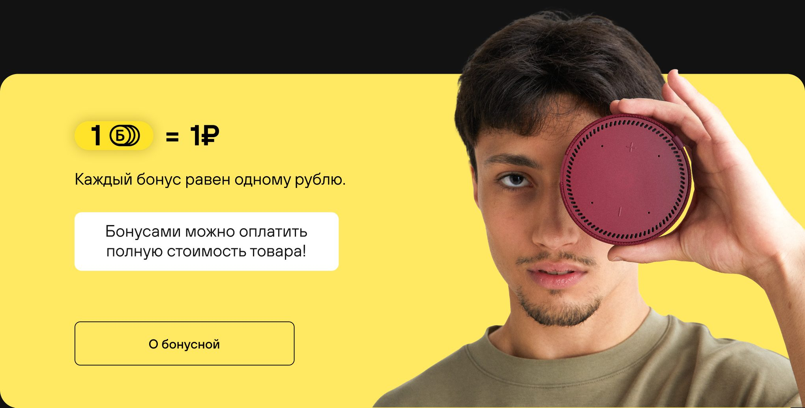
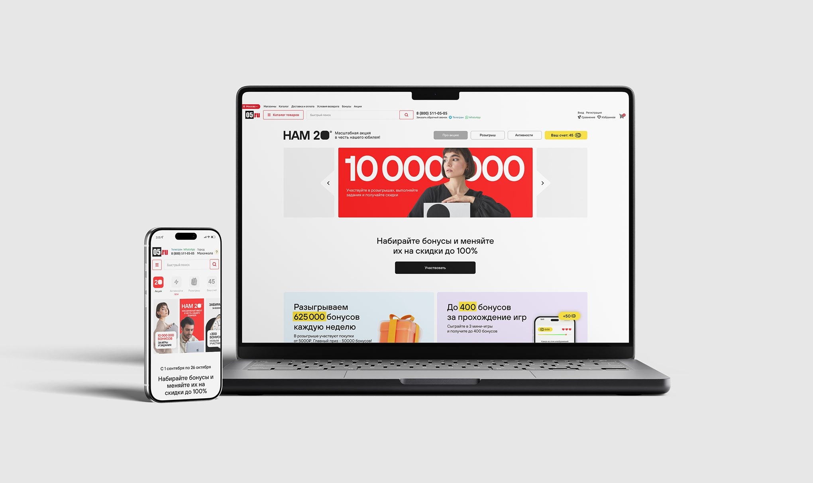

05.ru — спецпроект к 20 летию
Юбилейный спецпроект интернет‑магазина 05.ru: бонусы, мини‑игры и розыгрыши в одном понятном сценарии, который возвращает пользователя в каталог за покупкой.
Тип проекта
Реальный проект, был запущен на сайте 05.ru
Моя роль
Единственный дизайнер: структура, механика экранов, UI для desktop и mobile
Команда
Маркетинг и разработка 05.ru
О проекте
К юбилею интернет‑магазина техники 05.ru мы запустили спецпроект. Нужно было объединить бонусную программу, мини‑игры и еженедельные розыгрыши так, чтобы пользователи не запутались в условиях, сразу увидели выгоду и вернулись в каталог за покупками.
Принятые решения
Сначала выгода, потом правила
На первом экране пользователь сразу видит главное: размер бонусного фонда, возможность получить бонусы и кнопку участия. Я не стала начинать страницу с длинных условий и объяснений. Сначала пользователь должен заинтересоваться, а уже потом — узнать детали.

Понятные активности с низким порогом входа
Все активности представлены в компактных карточках с единым форматом: размер бонуса, простое описание действия и доступность. Пользователь сразу понимает условия и может выбрать задание, которое ему подходит.
Начать можно без покупки: добавить товар в избранное, положить в корзину, открыть нужный раздел или пройти мини‑игру. Это снижает порог входа и помогает вовлечь пользователей ещё до момента покупки.

Бонусы всегда на виду
Бонусы — главный мотиватор в проекте, поэтому они постоянно видны в интерфейсе:
- В шапке есть баланс пользователя
- На карточках указано, сколько можно заработать
- В блоках акции показан общий бонусный фонд
- Есть объяснение, что 1 бонус равен 1 рублю
- Пользователь понимает, что бонусы можно потратить на скидку
Так бонусы воспринимаются не как абстрактные баллы, а как деньги, которые можно использовать при покупке.

Регулярные поводы вернуться
Розыгрыши проходят каждую неделю, активности обновляются, а календарь показывает, какой этап идёт сейчас.
Это создаёт понятную причину вернуться на сайт: проверить новый розыгрыш, выполнить новое задание или использовать накопленные бонусы.

Итог
Спецпроект запущен к 20‑летию 05.ru. Вместо отдельного промо‑лендинга получился вовлекающий модуль внутри сайта, который ведёт пользователя обратно в каталог.
Как я бы оценивала успех: доля участников, которые потратили бонусы на покупку, и доля вернувшихся на следующий розыгрыш.